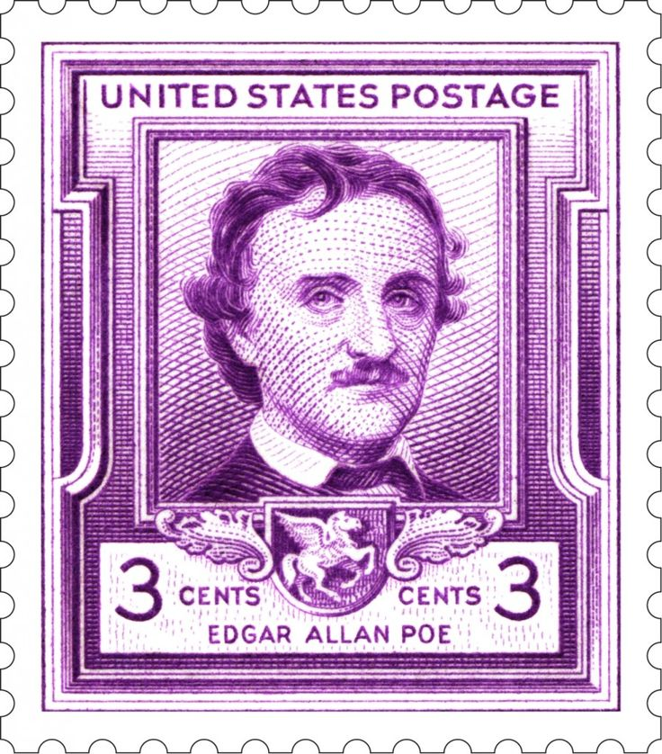

El Diablo en el Campanario
Inicio
Reseña
Este texto trata de una pequeña villa en Holanda, donde habitan muy pocas personas, especialmente de mayor edad, físicamente con ojos grandes, nariz abultada, gordos y no muy altos, cada uno se encontraba sentado en el sillón de su casa observando a los lejos el reloj de pueblo que está ubicado en el campanario. Todas sus casas eran idénticas, los mismos colores, la misma estructura y la vida de toda la villa giraba en torno a las horas del reloj; asi pues, tenían a un encargado de supervisar el funcionamiento del este, era una persona grande, con pipa en la boca, ojos saltones y siempre atento a la marcha del reloj.
Simultáneamente, se ve a los lejos un personaje que se acerca a la villa, todos lo miran de reojo, sin perder de vista el reloj. En efecto dicho personaje continuaba acercándose sin detenerse y quiere lo observaban asombrados empezaron a distinguir sus rasgos, de ojos grandes, nariz larga y dientes enormes, además de una pintoresca personalidad, ya que mientras avanzaba bailaba sin parar, con pasos descoordinados que llamaban la atención, mientras más se acercaba, el reloj también avanzaba acercándose al medio día, momento en el cual la villa a modo de ritual contaban sus campanadas. Así pues, en el momento dejaron avanzar al sujeto y prosiguieron con su ritual, fue así que el personaje se acerco lo suficiente y se adentro en el campanario donde empezó a bailar y a tocar más de tres veces la campana, en ese momento el puede desorientado entro en pánico y rompió la rutina que llevaba por décadas.
Para concluir, no siempre nuestro mundo gira en torno a un objeto o persona, también es bueno y necesario romper con la rutina, para desatar en caos e innovar en soluciones y nuevos puntos de vista y estrategias que permitan superar las adversidades y estar preparados para el cambio.
Biografia Edgar Allan Poe


Edgar Allan Poe nació en Boston, Estados Unidos, el 19 de enero de 1809. Sus padres murieron cuando era niño y fue recogido por un matrimonio adinerado de Richmond, Virginia, aunque nunca fue adoptado oficialmente. Pasó un curso académico en la Universidad de Virginia y posteriormente se enroló en el ejército, aunque por un periodo muy breve.
Se conviritó en un escritor, poeta, crítico y periodista romántico, y es reconocido como uno de los maestros universales del relato corto, del cual fue uno de los primeros representantes en Estados Unidos. Fue renovador de la novela gótica, recordado especialmente por sus cuentos de terror.
A Edgar Allan Poe también se le considera como el inventor del relato detectivesco y contribuyó con varias obras al género emergente de la ciencia-ficción. Entre las mejores obras del escritor estadounidense destacan El Cuervo, Annabel Lee, El pozo y el péndulo, El barril de amontillado, entre otras.
Edgar Allan Poe murió el 7 de octubre de 1849, a los 40 años de edad. Aunque se especuló con que la causa de la muerte tuvo que ver con el alcohol y un fallo cardíaco, nunca se esclarecieron los verdaderos motivos.
Glosario
ARGÜIR:
Aducir o alegar una razón o un argumento a favor o en contra de alguien o algo.
LIBREA:
Traje que los príncipes, señores y algunas otras personas o entidades dan a sus criados; por lo común, uniforme y con distintivos.
PROFUSIÓN:
Abundancia en lo que se da, difunde o derrama.
MIRIÑAQUE:
Alhajuela de poco valor que sirve para adorno o diversión.
PÍFANO:
Flautín de tono muy agudo, usado en las bandas militares.
CARDO:
Planta anual, de la familia de las compuestas, que alcanza un metro de altura, de hojas grandes y espinosas como las de la alcachofa, flores azules en cabezuela, y pencas que se comen crudas o cocidas, después de aporcada la planta para que resulten más blancas, tiernas y sabrosas.
BROCADO:
Dicho de una tela: Entretejida con oro o plata.
BEMOL:
Dicho de una nota: De entonación un semitono más baja que la de su sonido natural.
ALARIDO:
Grito lastimero en que se prorrumpe por algún dolor, pena o conflicto.
COZ:
Sacudida violenta que hacen las bestias con alguna de las patas.